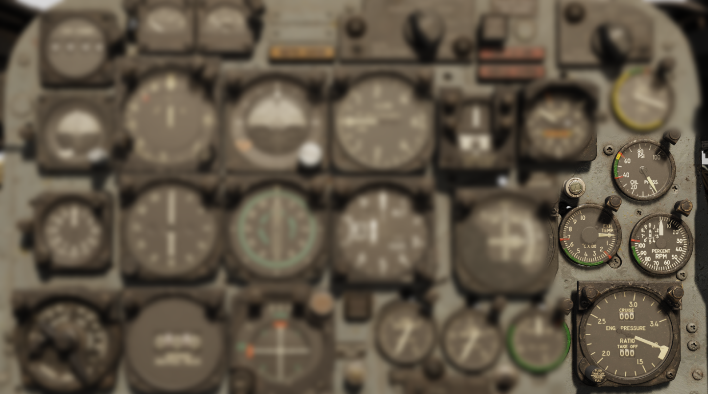
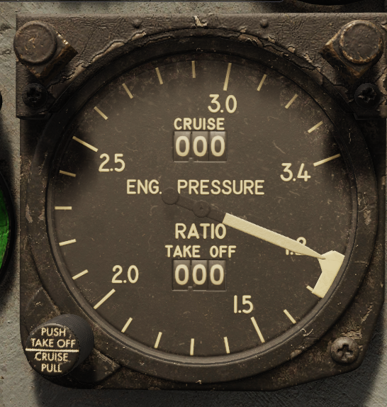
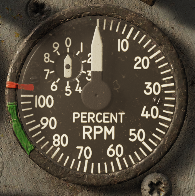
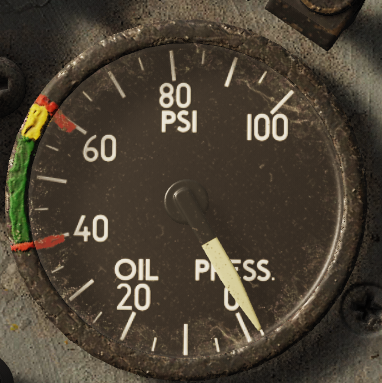
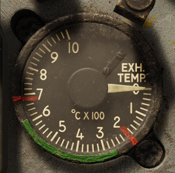

Engine

The F-100D is fitted with the Pratt & Whitney J-57 turbojet engine featuring the J-57-P-21 and J-57-P-23 afterburner nozzles. The -21 was the legacy nozzle that suffered from extensive afterburner ignition issues, reliability, and efficiency problems. The -23 nozzle (originally produced for the F-102) fixed these issues.
At full military power, the J-57 produces apoproximately 10,200 pounds of thrust under standard conditions, and 16,000 pounds in maximum afterburner.
The F-100D Super Sabre requires external air to rotate the core in order to start the engine. Otherwise, pilots used a cartridge start mechanism to rotate the core at sufficient speeds without the use of external air.
Caution
Engine ignitors can be damaged damaged if operated continuously for more than 5 minutes. Reserve their use only during the time it takes to complete an engine start.
Indications
Monitor the engine's status by reading the following four gauges toward the bottom-right of the instrument panel:

Engine Pressure Ratio Gauge

The engine pressure ratio gauge shows the ratio between the turbine discharge pressure and the pitot pressure.
The gauge shows two adjustable values for takeoff and cruise pressure ratios. Pushing in and adjusting the knob adjusts the takeoff setting. Pulling out and adjusting the knob adjusts the cruise setting.
Note
The EPR gauge is powered by the main AC bus.
EPR Takeoff Index Settings
Set the takeoff indexer on the instrument based on the type of afterburner nozzle installed on the aircraft, and the external temperature as follows:
| -21 | -23 | °F | °C |
|---|---|---|---|
| 1.82 | 1.79 | 122 | 50 |
| 1.84 | 1.80 | 118 | 48 |
| 1.85 | 1.82 | 116 | 46 |
| 1.86 | 1.83 | 111 | 44 |
| 1.87 | 1.85 | 108 | 42 |
| 1.88 | 1.86 | 104 | 40 |
| 1.89 | 1.88 | 100 | 38 |
| 1.90 | 1.89 | 97 | 36 |
| 1.91 | 1.91 | 93 | 34 |
| 1.92 | 1.93 | 90 | 32 |
| 1.93 | 1.94 | 86 | 30 |
| 1.94 | 1.96 | 82 | 28 |
| 1.96 | 1.97 | 79 | 26 |
| 1.97 | 1.99 | 75 | 24 |
| 1.98 | 2.00 | 72 | 22 |
| 1.99 | 2.02 | 68 | 20 |
| 2.01 | 2.03 | 64 | 18 |
| 2.02 | 2.05 | 61 | 16 |
| 2.03 | 2.06 | 57 | 14 |
| 2.04 | 2.08 | 54 | 12 |
| 2.05 | 2.09 | 50 | 10 |
| 2.06 | 2.10 | 46 | 8 |
| 2.07 | 2.12 | 43 | 6 |
| 2.09 | 2.13 | 39 | 4 |
| 2.10 | 2.15 | 36 | 2 |
| 2.11 | 2.16 | 32 | 0 |
| 2.13 | 2.17 | 28 | −2 |
| 2.14 | 2.19 | 25 | −4 |
| 2.16 | 2.20 | 21 | −6 |
| 2.17 | 2.21 | 18 | −9 |
| 2.18 | 2.23 | 14 | −10 |
| 2.20 | 2.24 | 10 | −12 |
| 2.21 | 2.26 | 7 | −14 |
| 2.22 | 2.27 | 3 | −16 |
| 2.23 | 2.28 | 0 | −18 |
| 2.25 | 2.29 | −4 | −20 |
| 2.27 | 2.30 | −8 | −22 |
| 2.28 | 2.31 | −11 | −24 |
| 2.29 | 2.32 | −15 | −26 |
| 2.30 | 2.33 | −18 | −28 |
| 2.32 | 2.34 | −22 | −30 |
| 2.34 | 2.35 | −25 | −32 |
| 2.35 | 2.36 | −29 | −34 |
| 2.37 | 2.37 | −33 | −36 |
Tachometer (RPM)

The tachometer registers engine speed in percentage of approximate maximum RPM (9980) of the high-speed compressor rotor.
Note
The tachometer receives power from a tachometer generator and is therefore independent of the aircraft electrical system.
Oil Pressure Gauge

The oil pressure gauge indicates oil pump discharge pressure above the gear case pressure in pounds per square inch.
Note
Oil pressure tends to follow the throttle. This is normal, provided the pressure remains within the limits.
Note
This gauge is powered by the 26 V AC instrument bus.
Exhaust Gas Temperature (EGT) Gauge

The exhaust temperature gauge shows engine exhaust temperature in ° C.
Note
Exhaust temperatue gauge indications are self-generating type thermocouples, and don't need power from the electrical system.